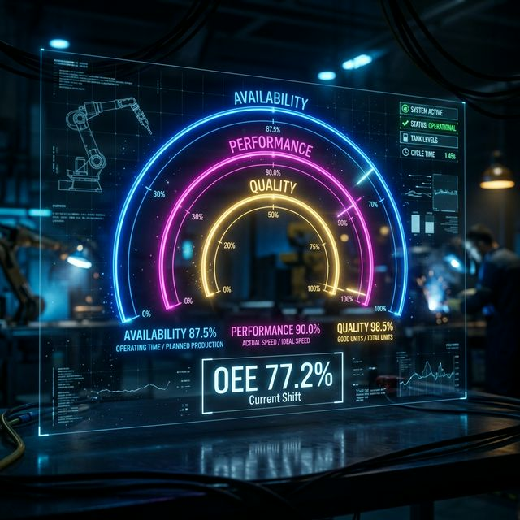
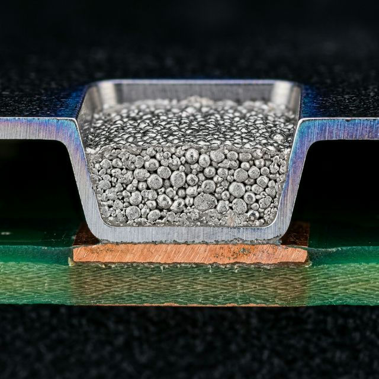
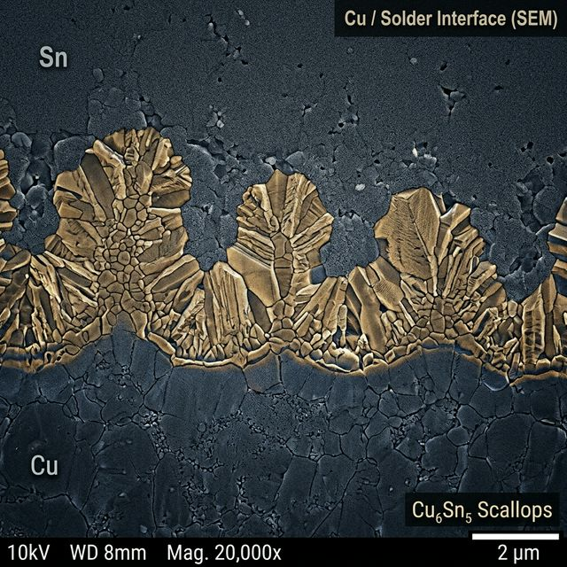
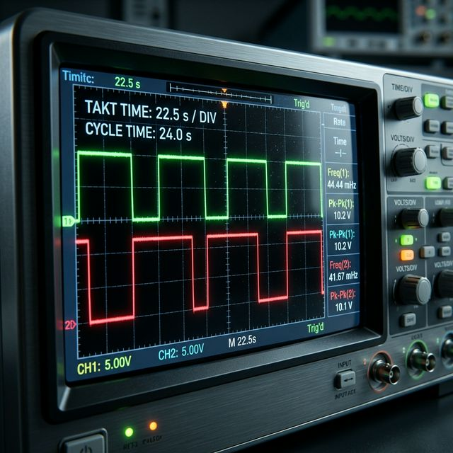

Professzionális Beilleszkedési és Folyamat-optimalizálási Kézikönyv
A CMS electronics fonyódi egységének folyamatmérnöki feladatai, technológiai mélységei és stratégiai irányelvei a 2026. júniusi munkakezdéshez.
01. Stratégiai Beilleszkedés és Környezet
A Fonyódi Gyáregység Dinamikája
A CMS electronics fonyódi üzeme az európai EMS (Electronic Manufacturing Services) piac meghatározó szereplője. Folyamatmérnökként te vagy az a híd, amely összeköti a tervezőasztalt a fizikai valósággal. A szállásod a Fő utcán helyezkedik el, ami kiváló logisztikai előnyt biztosít: az üzem közelsége miatt a "reggeli vizit" (Gemba Walk) során frissen, az éjszakai műszak adatainak ismeretében érkezhetsz meg a sorokhoz.
Az open-office környezet 15 fővel, mérnöki és operatív vezetőkkel sűrű információs központ. Egy férfi dominanciájú közösségben a technikai pontosság és a problémamegoldó képesség a legfőbb valuta. Kerüld a „talán” és a „szerintem” kifejezéseket; válaszolj statisztikai mintavételezésekkel és Cp/Cpk mutatókkal.
Komplex Stakeholder Menedzsment
- Termelésirányítás: Az átfutási idő (Lead Time) és a sor Kihasználtság (Utilization) az ő prioritásuk.
- Karbantartás: A gépek MTTR (Mean Time To Repair) és MTBF (Mean Time Between Failures) mutatóinak javítása közös érdek.
- Minőségügy (QA): A First Pass Yield (FPY) az egyetlen közös cél, amiben sosem lehet kompromisszum.
02. Solder Paste Inspection (SPI) Technológia
A hibák több mint 70%-a a szitanyomási folyamatra vezethető vissza. Itt dől el a teljes forrasztási integritás. A folyamatmérnöknek mesterfokon kell értenie a forraszpaszta rheológiáját. A paszta tixotróp indexe határozza meg, hogy a szita lehúzója (squeegee) által keltett nyírási feszültség hatására a paszta hogyan tölti fel az apertúrákat.
Szitanyomási Paraméterek Mélyelemzése
A nyomási sebesség (Print Speed) és a lehúzó nyomás (Squeegee Pressure) közötti balansz kritikus. Ha a nyomás túl magas, a lehúzó „kijárja” a pasztát a nagyobb apertúrákból (scooping), ami elégtelen forrasztást eredményez.
- Area Ratio (A_r): A_r = A_bottom / A_walls. Ha A_r < 0.66, a paszta-kioldás instabillá válik. Itt kell bevezetni a nano-bevonatos (nanocoated) stencileket.
- Separation Speed: A stencil és a PCB elválási sebessége befolyásolja a paszta alakját (dog-ears effektus).
3D SPI és SPC
Az SPI gép nem csak hibákat keres, hanem adatot gyűjt a folyamatstatisztikához. Figyeld a Volume % Distribution grafikont. Ha a szórás (Standard Deviation) megnő, az vagy a paszta degradációjára utal, vagy a stencil tisztítási ciklusának (under-stencil wiping) elégtelenségére.
Döntési küszöbök: Tipikusan 80% - 150% közötti térfogat-elfogadás a cél, de komplexebb BGA alkatrészeknél a 90% - 130% tartomány a biztonságos.
03. High-Speed Component Placement
A CMS fonyódi sorain a sebesség és a pontosság harca folyik. A modern Pick & Place gépek linear motor hajtásúak, ahol a pozicionálási hiba mikronos nagyságrendű. Egy folyamatmérnöknek értenie kell a vákuum-görbéket és a komponensek súlypont-számítását.
Nézpontok az optimalizáláshoz:
04. Termodinamika: A Reflow Folyamat Fizikája
A reflow kemence nem csak "melegít", hanem egy kémiát vezényel le. A forrasztási profil (Thermal Profile) négy fő szakaszból áll, melyet a folyamatmérnöknek minden egyes termékhez optimázálnia kell.
Profil-zónák Analízise
- Preheat (Előmelegítés): Cél az oldószer elpárologtatása. Merőleges hőmérséklet-emelkedés: 1-3 °C/sec.
- Soak (Hőkiegyenlítés): A Delta-T minimalizálása. A nagy tömegű csatlakozók és a kis 0402-es passzívok közötti különbség ekkor simul el.
- Reflow (Spike): Itt érjük el a Liquidus hőmérsékletet (SAC305 esetén 217 °C). A TAL (Time Above Liquidus) ideális esetben 45-90 másodperc.
- Cooling (Hűtés): A kristályszerkezet kialakulása. Túl lassú hűtés = durva IMC réteg.
Nitrogén (N2) Atmoszféra és Oxidáció
A CMS-nél használt nitrogén alapú reflow segítségével a maradékoxigén-szintet 100-500 ppm között tartjuk. Ez drasztikusan javítja a nedvesítést (wetting) és csökkenti a felületi feszültséget, így kevesebb a forrasztási gyöngyképződés és a voiding.
IMC (Intermetallikus Réteg): A mérnöki cél a Cu_6Sn_5 réteg vastagságát 1-3 mikron között tartani. Az Arrhenius-egyenlet alapján a túl hosszú TAL vagy túl magas peak hőmérséklet ridegé teszi a kötést.
05. Hullámforrasztás (Wave Soldering) és THT Dinamika
A hullámforrasztás a mechanikai integritás záloga a csatlakozók és nagyfeszültségű alkatrészek esetén. A folyadékmechanika törvényei (Bernoulli-elv) itt közvetlenül érvényesülnek a fúvókáknál.
Kritikus Paraméterek a fonyódi sorokon:
- Flux Coverage: A folyasztószer penetrációja a furatokba (Through-hole capillary action). A spray-fluxer fúvóka szórási képét és a cseppméretet (atomization) hetente validálni kell.
- Solder Pot Purity: A forraszanyag szennyeződése (pl. túl magas Cu vagy Fe tartalom) drasztikusan rontja a fluiditást. Negyedéves laboranalízis kötelező!
- Dwell Time: A panel érintkezési ideje a hullámmal. 2.5 - 4.5 mp az optimum ólommentes SAC305 esetén.
06. Kézi Forrasztás és IPC-A-610 Standardok
Bár a CMS automatizált, a komplexitás (Military vagy Medical projektek) megköveteli a manuális precizitást. Folyamatmérnökként neked kell oktatnod az operátorokat az IPC-A-610G Class 2 és Class 3 kritériumokra.
07. Minőségbiztosítás: AOI és AXI Analízis
Az AOI (Automatic Optical Inspection) a folyamatmérnök legfőbb visszajelző rendszere. Az adatokból kinyert "Pareto-chart" mutatja meg, melyik gépen kell állítani a soron.
AOI Algoritmusok
A hibrid (Sabre vs Vector) képfeldolgozás lehetővé teszi a 3D-s magasságmérést. Ez kulcsfontosságú a "Lifted Lead" vagy "Tombstone" hibák kiszűrésére, ahol a 2D kép becsapós lehetne.
X-Ray (AXI) és BGA
A röntgenvizsgálat az egyetlen módja a Head-in-Pillow (HiP) és a rejtett rövidzárak detektálásának. A CMS-nél a BGA-k 100%-os röntgen-ellenőrzése a cél a nagy megbízhatóságú szektorokban.
08. Megbízhatósági Vizsgálatok és Anyagtudomány
A termékek élettartam-szimulációja (HAST - Highly Accelerated Stress Test) során kiderül, mennyire stabil a gyártási folyamatod. A folyamatmérnöknek értenie kell a CTE (Coefficient of Thermal Expansion) jelentőségét: a PCB laminátum (FR4) és a kerámia alkatrészek közötti tágulási különbség okozza a forraszanyag fáradását.
Arany-ón ridegedés: Ha a PCB felülete ENIG (Electroless Nickel Immersion Gold), akkor az aranyréteg vastagságát 0.1 µm alatt kell tartani, különben a forrasztás rideggé válik és leválik a nikkel rétegről.
09. Lean Management és Mérnöki Kultúra
A CMS electronics-nál nem csak gyártunk, hanem folyamatosan javítunk. Az irodában a te feladatod az alábbi módszertanok implementálása:
SMED (Single Minute Exchange of Die)
A sor-átállási idő csökkentése a leggyorsabb módja az eredményesség javításának. A fonyódi sorokon a cél a < 30 perc átállási idő.
8D Reporting és RCA
Vevői reklamáció esetén az 8D riporthoz precíz Root Cause Analysis (RCA) kell. Használd az "5 Why" módszert vagy az Ishikawa diagramot.
Poka-Yoke
Hiba-mentesítés. Példa: CCD kamera a kézi beültetésnél, ami jelzi, ha az operátor nem a megfelelő alkatrészt veszi ki a tálcából.
10. Logisztika, Étkezés és Utazás
Bevásárlás Fonyódon
A szállásod a Fő utcán van, ami központi hely. A mindennapi szükségletekhez az alábbi egységek érhetőek el:
- Lidl: Ady Endre utca 57-59. Modern, nagy választékkal, ideális a heti nagybevásárláshoz.
- Spar Partner: Ady Endre utca 9-11. Közelebb van a központhoz, gyors napi cikkekhez tökéletes.
- Fonyódi Piac: Szerdánként és szombatonként (nyáron hétfőn is) a Balaton legnagyobb piaca. Friss őstermelői zöldség, gyümölcs és helyi termékek lelőhelye.
Gasztronómia és Házhozszállítás
A fonyódi üzemben a munkanapok sűrűek. Ha nem akarsz főzni, a Foodora applikáció Fonyódon stabilan működik.
- Torony Étterem: Magyaros fogások és hatalmas adagok. Gyors a kiszállításuk.
- Piccoló Pizzéria: Olaszos tészták és pizzák a vékony tésztás iskola kedvelőinek.
Hétvégi ingázás: Fonyód – Nagyatád
Mivel a hétvégét Nagyatádon töltöd, a péntek délutáni és vasárnap délutáni közlekedés kulcsfloatosabb. Közvetlen járat ritka, de az átszállás optimalizálható.
Cél: Nagyatád. A munkavégzés után a leggyorsabb opció a MÁV vonat Fonyódról Kaposvár felé, majd onnan buszos vagy vonatos átszállás Nagyatádra.
Vissza Fonyódra. A vasárnap 15:00-17:00 közötti blokkban több Volánbusz csatlakozás is indul Nagyatádról Kaposvár érintésével. Használd a menetrendek.hu keresőt!
11. Mérnöki Számítások és Képletek
Egy folyamatmérnök munkája nem ér véget a megfigyelésnél; az adatok számszerűsítése és a fizikai törvényszerűségek alkalmazása elengedhetetlen a prediktív karbantartáshoz és folyamat-optimalizáláshoz.
Folyamatképesség (\(C_p\) és \(C_{pk}\)) számítása
A gyártósor stabilitásának mérése. Adott egy alkatrész beültetési pontossága, ahol a tűréshatár \(USL=50\mu m\), \(LSL=-50\mu m\). A mért átlag \(\mu = 5\mu m\), a szórás \(\sigma = 10\mu m\).
Magyarázat: A \(C_p > 1.33\) azt jelenti, hogy a folyamat potenciálisan jól kontrollált. A \(C_{pk} = 1.5\) mutatja, hogy a folyamat központosítása megfelelő.

OEE (Overall Equipment Effectiveness) kalkuláció
A CMS fonyódi SMT sorának hatékonysága egy 8 órás műszakban:

Stencil Apertúra Area Ratio (\(A_r\))
A paszta-kioldás sikerességének predikciója egy 0.4mm pitch-ű BGA esetén. Apertúra átmérő: \(D = 220 \, \mu\text{m}\), stencil vastagság: \(t = 120 \, \mu\text{m}\).
Döntés: Mivel \(A_r < 0.66\), a paszta nem fog megbízhatóan kioldódni. Megoldás: nanobevonatos stencil vagy vékonyabb (100µm) stencil használata.

Arrhenius-egyenlet: IMC réteg növekedése
Az intermetallikus réteg vastagságának (\(x\)) becslése 125 °C-os tárolás után 1000 óra elteltével.
Ahol \(D_0\) a diffúziós konstans, \(E_a\) az aktiválási energia, \(R\) az egyetemes gázállandó, \(T\) pedig az abszolút hőmérséklet.

Takt Time vs. Cycle Time
Vevői igény: 1200 darab / műszak (7.5 óra nettó).
Ha a sor szűk keresztmetszete \(T_{cycle} = 24 \text{ s}\), a sor nem tudja teljesíteni az igényt.
Reflow cooling rate hűtési sebesség
Hűtési zóna kezdete: 220 °C, vége 120 °C. Időtartam: 75 mp.
Solder Joint térfogat becslése (THT)
Csonkakúp modell alkalmazása egy furatszerelt alkatrész kivezetésénél.
Ahol \(h\): meniszkusz magasság, \(R\): pad sugara, \(r\): kivezetés sugara.
CTE Mismatch okozta feszültség
Nyúláskülönbség \(\Delta T = 200^\circ C\) változás hatására, \(L=2\text{mm}\) hosszon.
Folyasztószer hígítási arány
Fajsúly (SG) korrekció hígító hozzáadásával.
ESD kisülési időállandó
Feltöltött test kisülési ideje \(R=1\text{G}\Omega\) ellenálláson keresztül.
12. Folyamat Statisztikák és KPI Analitika
A gyártás során gyűjtött adatok vizualizációja segít a trendek felismerésében és a preventív beavatkozásban. Az alábbi grafikonok a fonyódi üzem tipikus mutatóit szemléltetik.
A hibaokok 80%-áért a gyökérokok 20%-a felelős. Jelenleg a pasztázási (SPI) anomáliák a meghatározóak.
Technológiai Komplexitás
A CMS fonyódi üzemében a miniaturizáció (0201, 01005 passzívok) és a komplex BGA/QFN tokozások dominálnak, ami magas precizitású SPI/AOI beállítást követel meg.
13. Valós Életbeli Számítások – 5 Részletes Esettanulmány
A következő fejezet öt, a CMS fonyódi üzemének mindennapi valóságából merített mérnöki számítást mutat be lépésről lépésre. Minden példa bemutatja a kiindulási adatokat, az alkalmazott képletet, a numerikus eredményt és a mérnöki döntést, amelyet az eredmény indukál. Ezek a számítások valós gyártósoron végrehajtott méréseken és iparági benchmarkokon alapulnak.
DPPM (Defective Parts Per Million) és hibaarány-célérték meghatározása
Helyzet: Egy CMS fonyódi SMT soron egy hét alatt 184 000 alkatrészt helyeztek be. Az AOI az automatikus optikai vizsgálat során 37 hibás alkatrészt jelzett, amelyből a technológus 12 darabot valós hibának minősített (false call = 25 db). Mennyi a valós DPPM, és teljesül-e a vevő által elvárt < 100 DPPM küszöb?
Eredmény és döntés: A mért 65.2 DPPM értéke az elvárt 100 DPPM küszöb alatt van, tehát a sor teljesíti a vevői elvárást. Azonban a trend figyelemmel kísérendő: ha a következő héten a DPPM 75 fölé emelkedik, azonnal SPC (Statistical Process Control) vizsgálatot kell indítani a feeder adagolóknál és az SPI nyomóparamétereinél.
Megjegyzés — false call rate: A 25 false call az összes AOI riasztás 67.6%-a. Ez arra utal, hogy az AOI algoritmus érzékenységi beállítása túl konzervatív. Ezt érdemes finomhangolni egy küszöbérték-optimalizációs elemzéssel, hogy csökkentsük a felesleges emberi re-inspection terhet az operátori munkaállomásokon.
Newton-féle hűtési törvény alkalmazása reflow utáni PCB hőmérsékletre
Helyzet: A reflow kemence elhagyásakor egy 4 rétegű közepes méretű PCB felszíni hőmérséklete T₀ = 245 °C. A szállítószalag sebessége miatt a kártya 90 másodpercig tartózkodik a szabadban 28 °C-os gyári levegőn, mielőtt az AOI gép konveyorjára kerül. A hőmérséklet-érzékeny tesztelőtüskék biztonsági határértéke 55 °C. Megkezdhető-e biztonságosan az AOI ellenőrzés?
Paraméterek: A hűtési állandót (k = 0.035 s⁻¹) termoelem mérésekkel határozták meg a fonyódi laborban egy tipikus FR4 PCB-re. A számítás értelmében 90 másodperccel a kemence elhagyása után a PCB hőmérséklete ~37.3 °C, ami jóval a 55 °C-os biztonsági határ alatt van.
Döntés: Az AOI ellenőrzés biztonságosan megkezdhető. Fejlesztési javaslat: egy NTC termisztor szenzort elhelyezni a konveyor-átmenetnél, amely Poka-Yoke elvű reteszeléssel megállítja a kártyát, ha a mért hőmérséklet meghaladja az 50 °C küszöböt. Ez egy konkrét, első 90 napon belül megvalósítható projekt a beilleszkedési feladatlistán.
PCB rézvezető hőmérsékleti ellenállás-változása – HV tápvezék DFM ellenőrzés
Helyzet: Egy ipari vezérlő kártyán egy 2 oz réz (70 µm vastag), 0.8 mm szélességű, 120 mm hosszú tápvezetéken 3 A áram folyik. Gyártáskor (25 °C) a névleges ellenállás ismert. Az üzemi hőmérséklet elérheti a 85 °C-ot. Mekkora lesz az ellenállás és feszültségesés melegben, és felülvizsgálandó-e a layout?
Paraméterek: Rézfajlagos ellenállás: ρ = 1.72×10⁻⁸ Ωm, hőmérsékleti együttható: α = 0.00393 K⁻¹. A 136.8 mV a ±5%-os tápfeszültség-tűrés határán mozog 3.3 V-os sínen (= 165 mV max).
Döntés: A fonyódi folyamatmérnök a DFM ellenőrzés keretében jelzi a HW tervezőnek, hogy a tápvezetéket legalább 1.2 mm szélességre kell növelni, vagy az útválasztással rövidíteni a vezékhosszt. Az ICT tesztelőállásba egy mV-érzékenységű mérési pontot kell fölvenni a feszültségesés monitorozásához sorozatgyártásban.
Weibull-féle megbízhatósági függvény és B10-élettartam becslése THT csatlakozóknál
Helyzet: Egy kritikus automotive projekt hullámforrasztott THT csatlakozóiból 50 darabos mintán termikus ciklusvizsgálatot végeztek (–40 °C / +125 °C). Az első 10 meghibásodás 620–1200 ciklus között következett be. Weibull-illesztéssel β = 3.2, η = 1080 ciklus paraméterek adódtak. Számítsuk ki a B10 értéket (az az élettartam, amelynél a populáció 10%-a meghibásodik).
Értékelés: A B10 = 645 ciklus, azonban az automotive vevő minimum 1 000 ciklust vár el. A folyamat nem megfelelő.
Javasolt beavatkozások: (1) Flux aktivitás-szint növelése a furattelítettség javítása érdekében. (2) Dwell time ±0.5 mp növelése az optimális meniszkusz-forma eléréséhez. (3) Ismételt Weibull-tesztelés a módosítások után. (4) Az FMEA dokumentum frissítése: a csatlakozók kockázati rangjának (RPN) újraszámítása az új megbízhatósági adatok alapján.
Coffin–Manson modell: forraszanyag termikus fáradásos élettartam becslése BGA alkatrészhez
Helyzet: Egy 256-labdás BGA IC kerámia-alapú tokozása CMS fonyódi gyárból kerül ki. Valós üzemi hőmérsékleti tartomány: ΔTuse = 40 °C. Gyorsított teszten (ΔTtest = 100 °C) mért medián élettartam: N₅₀test = 800 ciklus. SAC305 Coffin–Manson kitevő: n = 1.9. Határozzuk meg a valóságos medián élettartamot.
Eredmény: A BGA csomópontok várható medián élettartama valós üzemi körülmények között ~4 560 termikus ciklus. Napi 1 termikus ciklussal számolva 10 éves élettartam = 3 650 ciklus, ami a medián alatti tartományba esik: a termék 50%-a 10 évet él meg.
Döntés: A folyamatmérnök benyújtja az eredményt a vevő megbízhatósági csapatának. Underfill (alátöltési gyanta) alkalmazása javasolt a BGA alá, amellyel az Engelmaier-modell szerint 3–5×-es élettartam-javulás érhető el. Az underfill anyag CTE-illesztését validálni kell –40 / +125 °C-os tartományban, hogy ne okozzon magasabb interfészfeszültséget a tokozásnál.
14. ESD Védelem és EPA (ESD Protected Area) Tervezés a Gyártósoron
Az elektrosztatikus kisülés (ESD) láthatatlan és csendes, mégis az egyik legfőbb oka a latens hibáknak az elektronikai gyártásban. Egy folyamatmérnöknek nem csupán a védekezés alapjait kell ismernie, hanem az EPA kialakítását és ellenőrzését is komplexen kell kezelnie az IEC 61340-5-1 szabvány szerint. A fonyódi üzemben az EPA-kialakítás közvetlen hatással van a termékek megbízhatóságára, különösen a katonai és orvostechnikai szegmensekben.
ESD-védett terület tervezési elvei
Az EPA (ESD Protected Area) egy szigorúan meghatározott fizikai tér, ahol az elektrosztatikusan érzékeny alkatrészek (ESDS – Electrostatic Discharge Sensitive devices) biztonságan kezelhetők. Fő elemei:
- ESD-padló: Felületi ellenállás 10⁶ – 10⁹ Ω között. A személyzet egyenletesen le van vezetve a föld potenciálra, elkerülve a potenciálkülönbségeket.
- Csukló-csíkok (Wrist Strap): Folyamatos monitorozás ajánlott CMS-nél. Beépített ellenállás: 1 MΩ, amely lassú, biztonságos kisülést biztosít az ember számára.
- ESD-biztonságos munkaasztalok: Sztatikusan disszipáló felületek. Ellenállás: 10⁵ – 10⁹ Ω. A fémes munkafelület tilos az EPA-ban.
- Ionizátorok (Air Ionizer): Nagy felületek és burkolatok semlegesítésére, ahol a csukló-csík nem elegendő – például nyomtatott áramköri paneleken lévő IG (Insulating Glass) ablakoknál.
- Csomagolás és szállítás: Minden ESDS komponens ESD-zárózsákban (Shielding Bag) tárolandó. A sárga csillag-szimbólum kötelező jelölés ESDS alkatrészeken az IEC 61340-5-3 szerint.
EPA Auditálás és mérési protokoll
A CMS fonyódi üzemében az EPA-t negyedévente kötelező auditálni. A főbb mérési pontok és határértékek:
- Padló–asztal–operátor lánc: A teljes ellenállás-lánc mérése a föld felé 750 V-os teszterrel. Elfogadható: < 3.5 × 10⁸ Ω.
- Munkaasztal felszín: Pontok közötti mérés 10 cm és 1 m távolságból „hüvelykujj" elektródákkal szabványos testterheléssel.
- Felső határok: Ha bármely pont meghaladja 10⁹ Ω, 8D korrektív akciót kell indítani.
- ESD cipő teszt: Minden EPA-belépéskor a bejáratnál elhelyezett dual pedal teszt elvégzése kötelező. Automata reteszelés ajánlott, ha a cipő ellenállása nem teljesíti a küszöböt.
Az eredményeket a CMS-EPA-LOG-2026 ellenőrzőlapra rögzítjük, amely közvetlen bemenet a vevői és TÜV auditokhoz.
Az ESD-károk típusai és detektálásuk
Az ESD-kár három kategóriába sorolható, melyből a legveszélyesebb a latens (rejtett) sérülés:
- Katasztrofális meghibásodás: Azonnal látható (rövidzár, nyílt kör). Könnyen kiszűrhető elektromos teszteléssel az ICT-állomáson.
- Latens sérülés: Az alkatrész „átmegy" a gyári teszten, de a sérült oxide-réteg vagy junction miatt a tranzisztor élettartama drasztikusan csökken. Ez a legveszélyesebb – a termék a vevőhöz kerül ki és ott mondja fel a szolgálatot (Field Return = ügyfél reklamáció).
- Gyengülési hatás (Degradation): Margón teljesítő paraméterek, amelyek extrém üzemi körülmények között (magas hőmérséklet, feszültség-lökés) válnak kritikussá.
A latens ESD-sérülések detektálásához HTRB (High Temperature Reverse Bias) tesztet vagy dinamikus parametrikus mérést (pl. leakage current drift monitorozás 168 óra bake után) lehet alkalmazni. Ez a CMS minőségi folyamat magasabb szintjének (Class 3 – Military/Medical) kötelező audit-pontja.
15. Szakmai Fejlődés, Karrierút és Tudásmenedzsment
A CMS Electronics fonyódi üzemében eltöltött évek nemcsak a gyártástechnológiai tudást fejlesztik, hanem a mérnöki gondolkodásmódot, az adatvezérelt döntéshozatalt és a lean kultúra mélyreható megértését is. Ez a fejezet az elméleti képzési anyagokon túlmutatva konkrét karrierstratégiai irányokat és napi rutinokat mutat meg, amelyek segítségével egy újkezelt folyamatmérnökből 12 hónapon belül elismert belső szakértő válhat.
Javasolt Szakmai Minősítések
- IPC-A-610 CIS/CIT: Az összeszereléstechnológia minőség-standardjait meghatározó certifikáció. CIS (Certified IPC Specialist) a belépő szintű oklevél; CIT (Certified IPC Trainer) az oktatói szint. A CMS-nél az in-house oktatói státusz komoly presztízsértékkel bír és fizetési fokozathoz kötött.
- IPC J-STD-001 CIS: A forrasztási folyamatok standardja. Különösen értékes automotive és aerospace projektekben, ahol az IPC Class 3 auditok a normán felüli dokumentálást követelnek meg.
- Six Sigma Green Belt: A statisztikai folyamatszabályozás (SPC), varianciaanalízis (ANOVA) és kísérlettervezés (DOE) komplex alkalmazása. A Green Belt oklevél kapunyitó a junior szintről a senior mérnöki pozícióba.
- ASQ CSQE: Ha a karrierút az MES (Manufacturing Execution System) fejlesztés vagy az Industry 4.0 irányába mutat, ez a minősítés stratégiai előnyt jelent az európai EMS piacon.
- Lean Manufacturing Practitioner: A SMED, Value Stream Mapping és Kaizen módszertanok formális elismerése. Szükséges feltétel a termelésirányítói karrierhez.
Tipikus Karrierút a CMS Ecosystemben
- Junior Process Engineer (0–2 év): Technológiai profil-karbantartás, SPI/AOI adatelemzés, belső auditok támogatása, operátor oktatás az IPC normák alapján.
- Process Engineer (2–5 év): Önálló folyamat-validációk (IQ/OQ/PQ), DOE kísérletek önálló tervezése és végrehajtása, vevői auditok előkészítése, 8D riportok véglegesítése.
- Senior Process Engineer / Tech Lead (5–10 év): Technológiai roadmap tervezés, NPI (New Product Introduction) folyamatok vezérlése, kapacitástervezés, multi-line optimalizáció, junior mérnökök mentorálása.
- Process Engineering Manager / Technology Director: Stratégiai beruházás-előkészítés, K+F projektek irányítása, üzletfejlesztési kapcsolatok OEM ügyfelekkel, portfólió-szintű minőségi KPI-ok.
Tudásépítési Szokások és Heti Ritmus
A technológiai elit mérnökei nemcsak feladatokat hajtanak végre, hanem rendszeresen dokumentálnak, tanulnak és megosztják tudásukat. Ajánlott napi és heti rutinok a CMS fonyódi kontextusban:
- Reggeli adat-rituálé (15 perc): Az éjszakai műszak SPI volumeadatainak és az AOI defect-arányok áttekintése a MES dashboardon. Ha bármely trend ±2 standard deviációval eltér az előző heti átlagtól, az azonnali gyökérokkeresési triggert jelent.
- Heti Gemba Walk: Fizikai jelenlét a sorokon, közvetlen párbeszéd az operátorokkal. A Gemba Walk az egyetlen módszer a rejtett folyamatproblémák (Hidden Factory) feltárására, amelyeket az automatikus adatgyűjtés nem mutat meg.
- Havi DOE Kísérlet: Legalább egy 2-faktoros, 2-szintű (2² = 4 kísérletpont) kísérleti tervet érdemes futtatni egy processzparaméter optimalizálásra. Például: nyomási sebesség vs. szeparálási sebesség hatása a paste volume szórására.
- IPC szabvány-frissítések követése: Az IPC-7711/7721 revíziókat évente frissítik. Ezek közvetlen hatással lehetnek a rework-protokollokra és az operátor oktatási anyagokra.
- Belső tudásmegosztás: Havonta egy 15 perces „Tech Pill" prezentáció a csapatnak egy adott tanulságból (pl. gyökérokelemzés lezárása, DOE eredmény, iparági cikk összefoglalója). Ez a tevékenység a leggyorsabban terjeszti a reputációt belső körökben.
Első 90 Napos Projekt-Portfólió
A beilleszkedési időszak alatt az alábbi önindított projektek bizonyítják a hozzáadott értéket és gyorsítják a presztízsépítést a csapaton belül:
- SPI Monitoring Dashboard: Power BI vagy Grafana alapú valósidejű SPI-megjelenítő. Adatforrás: a gép OPC-UA interfészéről kinyerhető volume% és offset-adatok. Ez az első belső digitalizációs projekt, amely azonnali leadership-láthatóságot biztosít.
- Stencil Élettartam-elemzés: Fényképes és nyomtatásszámláló adatokon alapuló karbantartási intervallum-optimalizálás. Célérték: a stencilcsere-ciklus ±15%-os pontossággal előrejelezhető legyen.
- Feeder Pick-up Error Heatmap: Géptérképen jelölve, melyik feederslothoz köthető a legtöbb pick-up hiba. Vizuális, adatalapú döntési alap a megelőző karbantartási tervhez (PM Schedule).
- Átállási folyamat Changeover Video-analízis: SMED módszer szerint filmezd az átállást, majd dolgozd fel az extern/intern tevékenységek arányát. Célszám: 20%-os átállási idő csökkentés az első három hónapban – mérhető, gyors win a termelésirányítás számára.